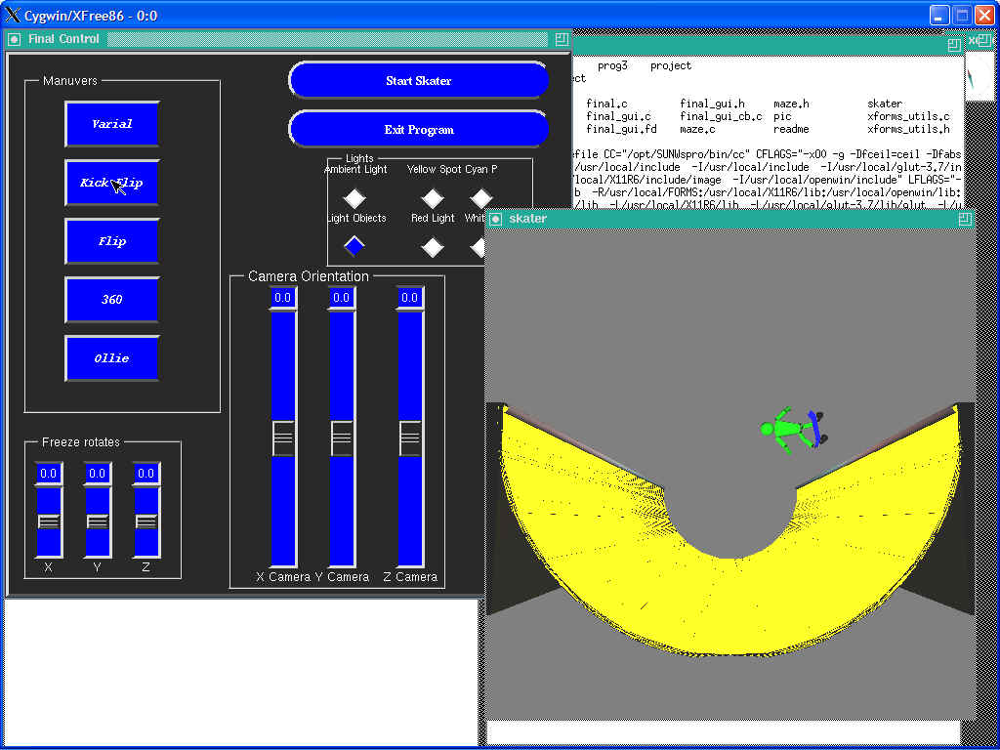

Jason Brody-Stewart
Final Project
Purpose-To teach my self how to do a animation with openGL. I learned that hard coding
animation is not a good tactic. It would be easier to make key fame generation and let the computer do the in-between steps.Main files-disp_utils.c, formd.c, Makefile, maze.c, final.c, final_gui.c,
final_gui.fd, final_gui_cb.c, xforms_utils.cdisp_utils.c-Makes all the openGL calls does the actual drawing. I had to
add a lot of function to this file.formd.c-File used by fdesign to create gui.
Makefile-File used to complie the program. Must be in the following
syntax [make sun_xforms].maze.c-File were all world manipulations are done. This is where I wrote
the procedures that the buttons called in order to do the various tasks on the world.final.c-File where the program runs from. Does any reading of argument
passed inorder to change the window size. It also starts up xforms and Glut.final_gui.c-gui generated with fdesign
final_gui.fd-file used by fdesign to create gui
final_gui_cb.c-file that contains the calls to perform tasks that your
buttons should perform.xforms_utils.c-file where all your xforms stuff is done.
Running Program
To compile the program type "make". To run my program type "skater".
Then you can use the gui to start the skater, or by typing the i key. Once The program is running you can use the gui to change various things. As a default all lighting is turned on, and the light object button is off. The light object button turns on wire spheres at the location of the light. Also you can perform all the maneuvers from the display window. I did this in order so that you can do more than one move at a time. It is quite difficult to click the mouse button fast enough so that you can do more than one move at a time. While on the key-board you could click all the maneuvers at the same time by pressing all the keys at the same time.(k,v,s,f,o,3) I also included a bullet time feature. This means that by clicking the mouse any where in the display window the animation stops and you can spin the guy so that you can see what he is doing exactly. By clicking the mouse again you can continue his animation. Algorithm I basically hard coded everything into display utilities. I realized that I could used hierarchical structures after I was already done hard coding everything, and I ran out of time to change back. This causes animation of the program very difficult to follow. It also caused the animation of the program difficult to come up with.The animation works like this: There is a time variable called t, and a velocity variable called vel and a acceleration variable called accel. From t the position of the guy is computed, using polar cords. The value of accel=accel+vel. So this means the value of vel never changes but the value of accel goes between -16 and 16. Which then means that the value of t changes exponentially between -140 and 200. This creates the guy to move like he should in real life. So that while he is going down he is accelerating and while he is going up he is decelerating. But it is even more complicated than that! When he is in the ramp his position is computed by a cylindrical cords, but when he is in the air his position is computed by liner cords. So at the value of t=-40 he is at the top of the right side of the half pipe, and when t=220 he is at the top of the left side of the half pipe. When t=90 he is at the bottom of the ramp. So at the t values between 180, 0 he is moving in cylindrical cords and at the t between 180,220 and 0, -140 he is moving in linear cords.
The tricks work like this: By a sequence of flags and calls to the methods and the value of t. The globals for the body and the skate board are set. I figured out the values by trial error method. All animation is done by calling a portion of tricks based on the globals flags. It also works like a game in some respects. If you do not complete the move in the time you are in the air he falls. It is possible to complete all moves except the ollie move. I designed it that way so that if you perform all the tricks at least on trick will make you fall. The trick to make most moves is to click the gui or key when he is at the bottom of the ramp This way the second he is in the air he starts performing the trick.
Problems
I had problems figuring out the animation mathematics. But I had enough time to solve this with trial and error. I had serious problems modeling the ramp. I could not seem to figure out the control points for a half-pipe. So I used a series of scaled cubes with cylindrical cords, in a for loop. basically my main problem is that I needed to use trial error on each part of, each animation. So the entire project took a lot more time than expected. Plus the fact that once I had it all done, then we learned how to do higher arch structures in the class.
